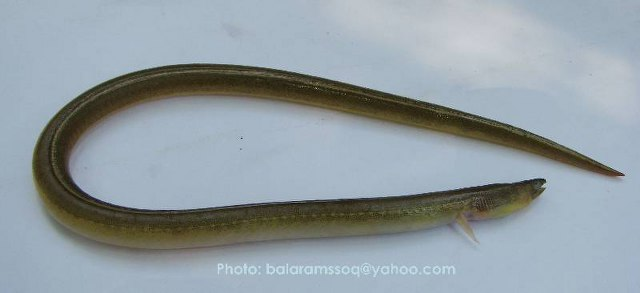
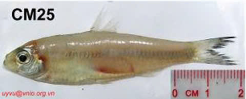
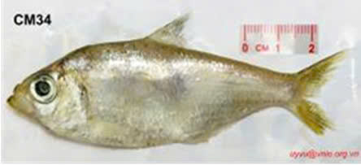
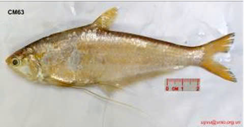

Cá đuối bồng hoa trắng
Himantura gerrardi

Cá đuối ngói
Himantura imbricata

Cá cháo lớn
Megalops cyprinoides

Cá lạc
Congresox talabonoides

Cá nhệch
Pisodonophis cancrivorus

Cá mòi không răng
Anodontostoma chacunda

Cá mòi thái lan
Anodontostoma thailandiae

Cá mai
Escualosa thoracata

Cá bẹ
Ilisha melastoma

Cá lẹp trắng
Setipinna phasa

Cá lẹp vàng
Setipinna breviceps